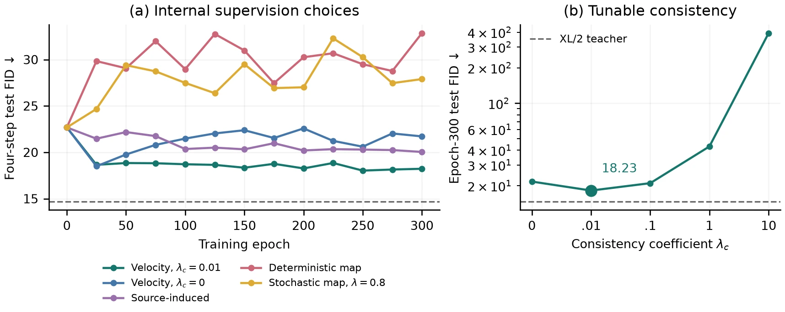

Collect student states
Use the native few-step flow map to acquire states efficiently.
GEORGIA INSTITUTE OF TECHNOLOGY
Rollout–Kernel Separation for On-Policy Distillation
of Few-Step Flow-Map Generators

FlowMap-OPD separates the native rollout that collects student states from the kernel used for teacher–student comparison. Flow–velocity consistency connects local supervision to the long-range map used for generation. This enables flow-map, induced-velocity and instantaneous-velocity supervision within one framework.
EXPLORE THE RESULTS
Choose a task and an example, then turn models on or off to compare their outputs.
Paired examples from the paper: shared prompt and initial noise. These qualitative examples use the student with λc = 0; the quantitative results below use λc = 0.001.
THE CORE IDEA
Use the native few-step flow map to acquire states efficiently.
Compare long-range maps, induced velocities or instantaneous velocities.
Control teacher-velocity matching and student consistency separately.
SPECIALIST CONSOLIDATION
The same student acquires the three specialist capabilities in 300 training steps. Results use λc = 0.001.
| Model | GenEval ↑ | OCR ↑ | PickScore ↑ |
|---|---|---|---|
| Base | 0.5041 | 0.3491 | 20.9758 |
| Corresponding specialist | 0.8454 | 0.8504 | 23.0772 |
| FlowMap-OPD student | 0.8580 | 0.8830 | 23.1502 |

Distilling XL/2 teachers into B/2 students explores the supervision design space. Under the MMD reward, instantaneous velocity supervision with λc = 0.01 reduces four-step FID from 22.68 to 18.23.
